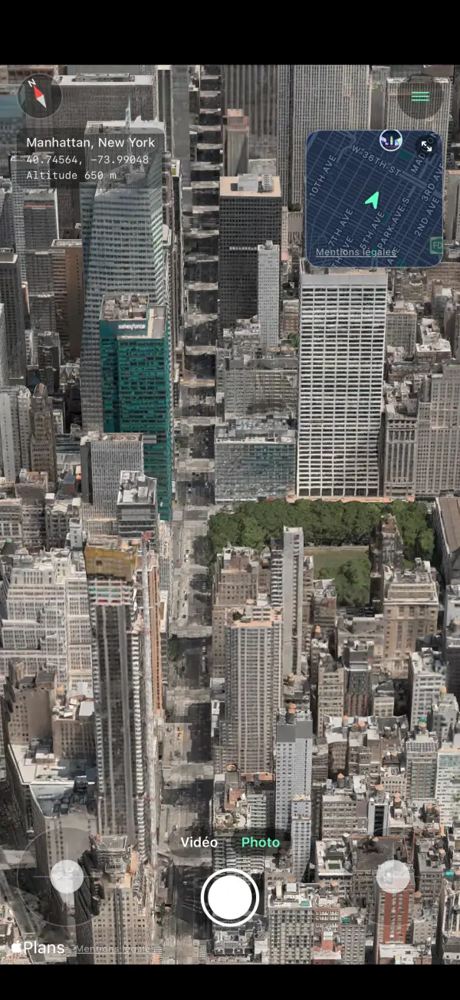
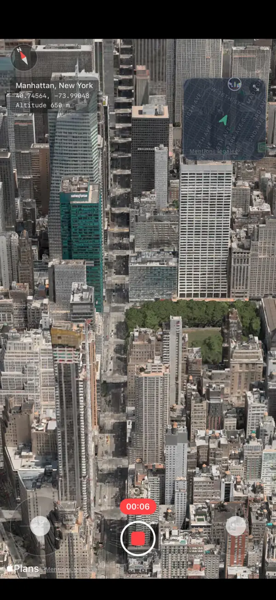
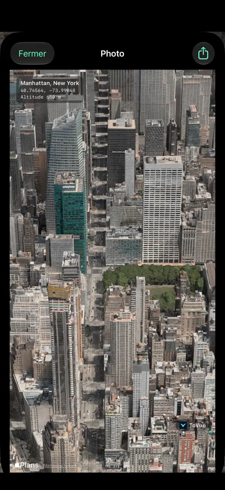
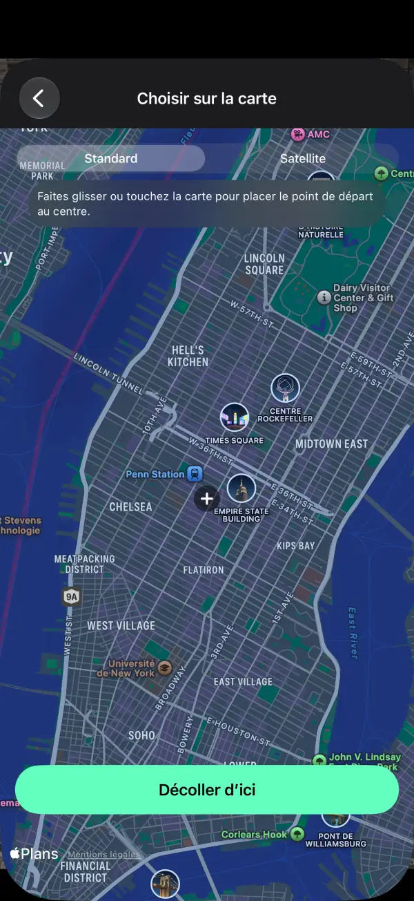
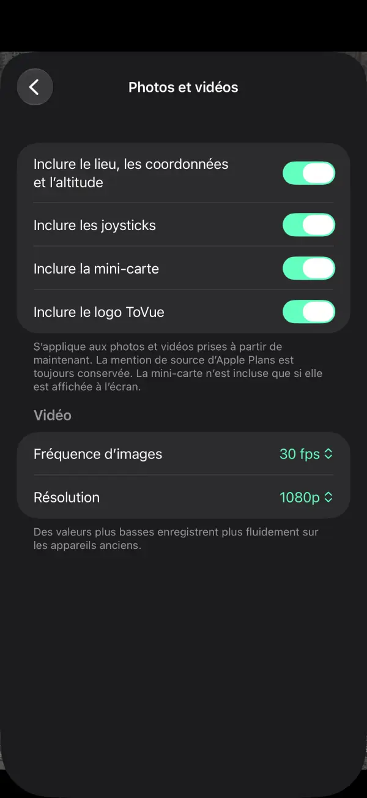

Survolez des cartes 3D comme un drone.
Survolez librement les villes du monde sur iPhone et iPad.
Gardez la vue en photo ou en vidéo — juste la carte, sans les commandes.
 Gratuit · Sans inscription · Sans accès à votre position
Gratuit · Sans inscription · Sans accès à votre positionCe que vous pouvez faire
Pilotez avec les joysticks et gardez la vue exactement telle que vous la voyez.
Volez librement
Montez, pivotez et avancez avec deux joysticks à l'écran — ou d'un seul doigt en mode une main.
Mini-carte
Voyez où vous êtes et dans quelle direction vous regardez. Touchez-la pour choisir un nouveau lieu sur la carte.
Filmez en vidéo
Passez de Photo à Vidéo comme dans l'app Appareil photo et enregistrez votre vol.
Photos de la carte seule
Capturez la vue sans les commandes, avec en option le lieu, les coordonnées et l'altitude.
Allez n'importe où
Recherchez un lieu ou choisissez-le sur la carte, et commencez à voler de là instantanément.
11 langues
Français, anglais, japonais, chinois, coréen et plus encore. Pour iPhone et iPad.
Captures d'écran





Tarifs
Tout est gratuit. Vous préférez sans publicité ? Un seul achat suffit.
Basique
- Toutes les fonctions de vol, photo et vidéo
- Une bannière et une publicité plein écran après un déplacement
- Logo ToVue sur les photos et vidéos
Supprimer publicités et logo ToVue
- Un seul achat, pas un abonnement
- Aucune publicité
- Possibilité de retirer le logo ToVue des photos et vidéos
Bon à savoir
- ToVue est une visionneuse de cartes virtuelle. Elle ne pilote pas de vrai drone et n'est pas un outil de navigation ni de planification de vol.
- Les bâtiments et le relief 3D proviennent de Plans d'Apple, et leur niveau de détail varie selon les zones.
- Une connexion Internet est nécessaire. ToVue n'utilise jamais le GPS et ne demande jamais votre position.
- L'attribution de Plans d'Apple reste toujours visible sur les photos et vidéos.
Allez capturer la vue depuis le ciel.
Gratuit · Sans inscription · Sans accès à votre position